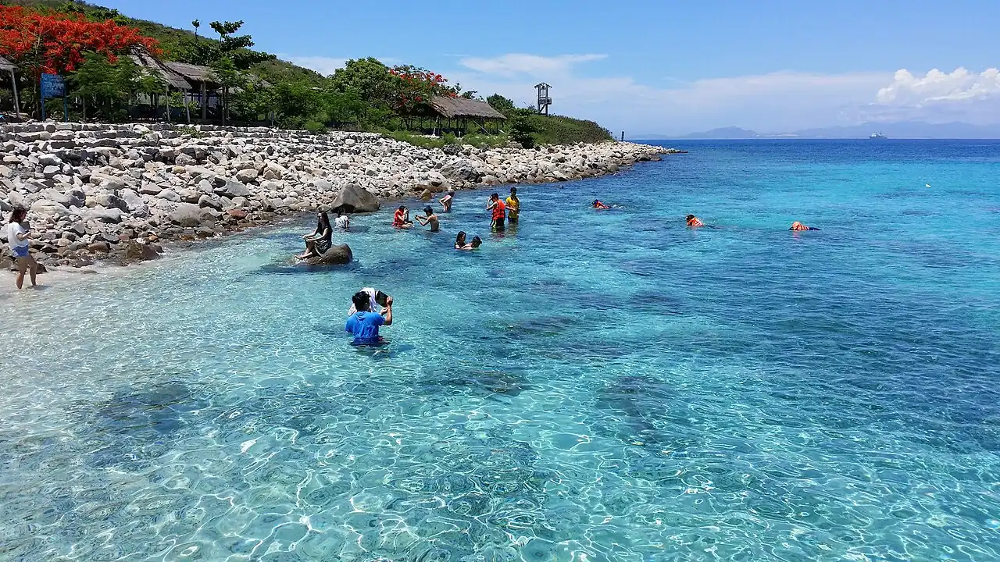

Hòn Mun
Nha Trang, Vietnam · snorkeling, plongée

Île de la baie de Nha Trang, au cœur de la première aire marine protégée du Vietnam. C’est le site le plus connu de la région pour découvrir coraux et poissons de récif en snorkeling ou en baptême.
- Lieu
- Nha Trang, Vietnam
- Niveau
- Débutant
- Activités
- snorkeling, plongée
- Type d'eau
- Mer / océan
- Coordonnées
- 12.17, 109.30 (position approximative du secteur)
Dangers à connaître
- Nombreux bateaux d’excursion sur les sites.
- Coraux fragiles : ne touche pas le récif et ne marche pas dessus.
Le conseil d'Ocean Buddy
Évite la saison des pluies (octobre à décembre environ) et préfère une sortie en petit groupe, tôt le matin.
Ouvrir dans Ocean Buddy Télécharger sur l'App Store
Source : Fiche Ocean Buddy · septembre 2026 · à vérifier localement.